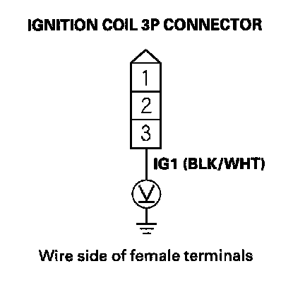
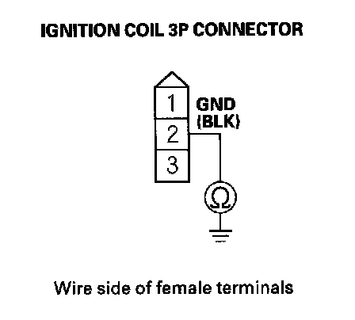
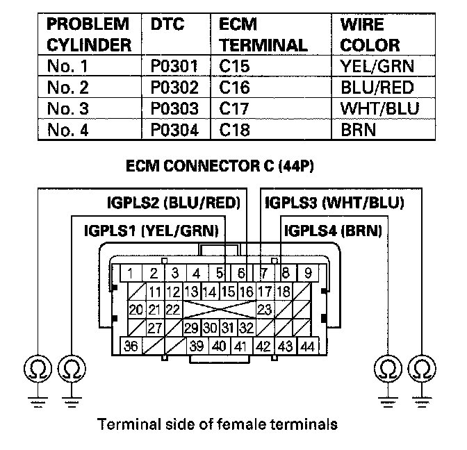
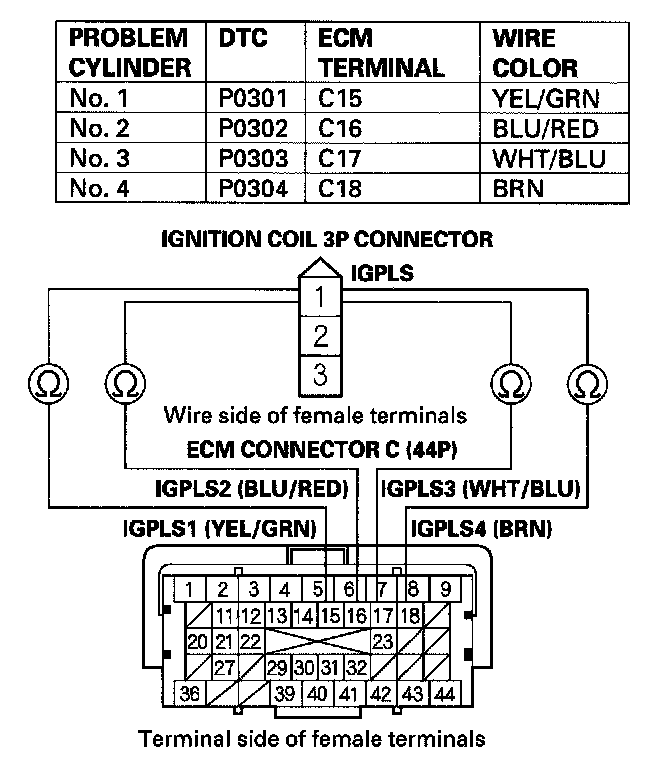
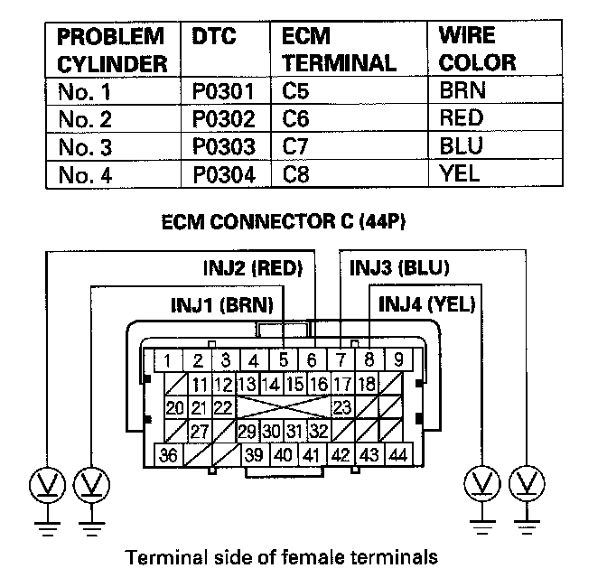
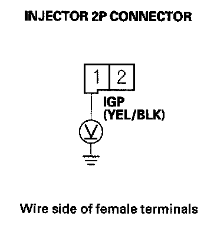
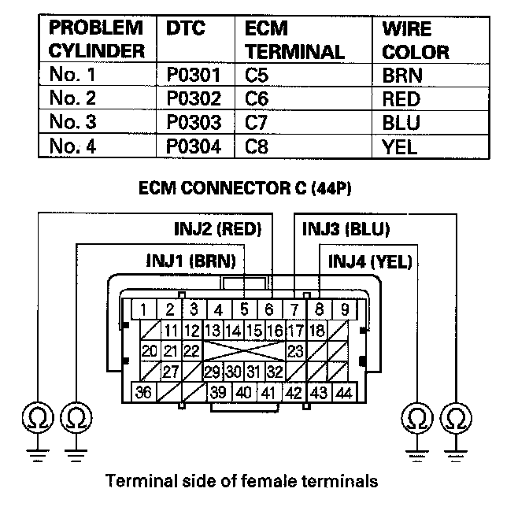
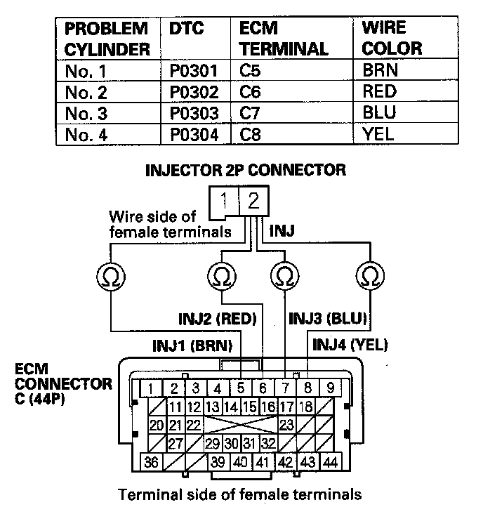
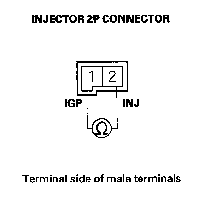

DTC Troubleshooting
DTC P0301: No.1 Cylinder Misfire DetectedDTC P0302: No.2 Cylinder Misfire Detected
DTC P0303: No.3 Cylinder Misfire Detected
DTC P0304: No.4 Cylinder Misfire Detected
NOTE: Before you troubleshoot, record all freeze data and any on-board snapshot, and review the general troubleshooting information.
1. Turn the ignition switch ON (II).
2. Clear the DTC with the HDS.
3. Start the engine, and let it idle without load (in neutral).
4. Monitor the OBD STATUS for DTC P0301, P0302, P0303, or P0304 in the DTCs MENU with the HDS.
Does the screen indicate FAILED?
YES - Go to step 9.
NO - If the screen indicates PASSED, go to step 5. If the screen indicates EXECUTING, keep idling until a result comes on. If the screen indicates OUT OF CONDITION, wait for several minutes, and recheck.
5. Check the CYL1 MISFIRE, CYL2 MISFIRE, CYL3 MISFIRE, and/or CYL4 MISFIRE in the DATA LIST for 10 minutes with the HDS.
Does the CYL1 MISFIRE, CYL2 MISFIRE, CYL3 MISFIRE, and/or CYL4 MISFIRE show misfire counts?
YES - Go to step 9.
NO - Go to step 6.
6. Test-drive the vehicle for several minutes in the range of these recorded freeze data parameters:
- ENGINE SPEED
- VSS
- REL TP SENSOR
- CLV (calculated load value)
- APP SENSOR
7. Monitor the OBD STATUS for DTC P0301, P0302, P0303, or P0304 in the DTCs MENU with the HDS.
Does the screen indicate FAILED?
YES - Go to step 9.
NO - If the screen indicates PASSED, go to step 8. If the screen indicates EXECUTING, keep driving until a result comes on. 1fthe screen indicates OUT OF CONDITION, go to step 6 and recheck.
8. Check the CYL1 MISFIRE, CYL2 MISFIRE, CYL3 MISFIRE, and/or CYL4 MISFIRE in the DATA LIST for 10 minutes with the HDS.
Does the CYL1 MISFIRE, CYL2 MISFIRE, CYL3 MISFIRE, and/or CYL4 MISFIRE show misfire counts?
YES - Go to step 9.
NO - Intermittent failure, the system is OK at this time. Check for loose wires or poor connections in the fuel system circuit.
9. Turn the ignition switch OFF.
10. Remove the intake manifold cover.
11. Start the engine, and listen for a clicking sound at the injector of the problem cylinder.
Does the injector click?
YES - Go to step 12.
NO - Go to step 42.
12. Turn the ignition switch OFF.
13. Exchange the ignition coil from the problem cylinder with one from another cylinder.
14. Test-drive the vehicle for several minutes in the range of these recorded freeze data parameters:
- ENGINE SPEED
- VSS
- REL TP SENSOR
- CLV (calculated load value)
- APP SENSOR
15. Check the CYL1 MISFIRE, CYL2 MISFIRE, CYL3 MISFIRE, and/or CYL4 MISFIRE in the DATA LIST for 10 minutes with the HDS.
Does the CYL 1 MISFIRE, CYL2 MISFIRE, CYL3 MISFIRE, and/or CYL4 MISFIRE show misfire counts?
YES - Go to step 16.
NO - Intermittent misfire due to poor contact at the ignition coil connector (no misfire at this time). Make sure the coil connections are secure.
16. Determine which cylinder had the misfire.
Does the misfire occur in the cylinder where the ignition coil was exchanged?
YES - Replace the faulty ignition coil, then go to step 60.
NO - Go to step 17.
17. Turn the ignition switch OFF.
18. Exchange the spark plug from the problem cylinder with one from another cylinder.
19. Test-drive the vehicle for several minutes in the range of these recorded freeze data parameters:
- ENGINE SPEED
- VSS
- REL TP SENSOR
- CLV (calculated load value)
- APP SENSOR
20. Check the CYL1 MISFIRE, CYL2 MISFIRE, CYL3 MISFIRE, and/or CYL4 MISFIRE in the DATA LIST for 10 minutes with the HDS.
Does the CYL1 MISFIRE, CYL2 MISFIRE, CYL3 MISFIRE, and/or CYL4 MISFIRE show misfire counts?
YES - Go to step 21.
NO - Intermittent misfire due to spark plug fouling (no misfire at this time).
21. Determine which cylinder had the misfire.
Does the misfire occur in the cylinder where the spark plug was exchanged?
YES - Replace the faulty spark plug, then go to step 60.
NO - Go to step 22.
22. Turn the ignition switch OFF.
23. Exchange the injector from the problem cylinder with one from the another cylinder.
24. Start the engine, and let it idle for >1m2 minutes>0m.
25. Test-drive the vehicle for several minutes in the range of these recorded freeze data parameters:
- ENGINE SPEED
- VSS
- REL TP SENSOR
- CLV (calculated load value)
- APP SENSOR
26. Check the CYL1 MISFIRE, CYL2 MISFIRE, CYL3 MISFIRE, and/or CYL4 MISFIRE in the DATA LIST for 10 minutes with the HDS.
Does the CYL1 MISFIRE, CYL2 MISFIRE, CYL3 MISFIRE, and/or CYL4 MISFIRE show misfire counts?
YES - Go to step 27.
NO - Intermittent misfire due to bad contact at the injector connector (no misfire at this time). Check for poor connections or loose terminals at the injector.
27. Determine which cylinder had the misfire.
Does the misfire occur in the cylinder where the injector was exchanged?
YES - Replace the faulty injector, then go to step 60.
NO - Go to step 28.
28. Turn the ignition switch OFF.
29. Disconnect the ignition coil 3P connector from the problem cylinder.
30. Turn the ignition switch ON (II).

31. Measure voltage between ignition coil 3P connector terminal No.3 and body ground.
Is there battery voltage?
YES - Go to step 32.
NO - Repair open in the wire between the ignition coil and the ignition coil relay, then go to step 60.
32. Turn the ignition switch OFF.

33. Check for continuity between ignition coil 3P connector terminal No.2 and body ground.
Is there continuity?
YES - Go to step 34.
NO - Repair open in the wire between the ignition coil and G101, then go to step 60.
34. Turn the ignition switch OFF.
35. Jump the SCS line with the HDS.
36. Disconnect ECM connector C (44P).

37. Check for continuity between body ground and the appropriate ECM connector terminal of the problem cylinder (see table).
Is there continuity?
YES - Repair short in the wire between the ECM and the ignition coil, then go to step 60.
NO - Go to step 38.

38. Check for continuity between appropriate ignition coil 3P connector terminal No.1 and the appropriate ECM connector terminal of the problem cylinder (see table).
Is there continuity?
YES - Go to step 39.
NO - Repair open in the wire between the ECM and the ignition coil, then go to step 60.
39. Reconnect all connectors.
40. Do an engine compression and a cylinder leak down test.
Did the engine pass both tests?
YES - Go to step 41.
NO - Repair the engine, then go to step 60.
41. Do the VTEC rocker arm test.
Did the engine pass the test?
YES - Go to step 42.
NO - Repair the VTEC rocker arm, then go to step 60.
42. Turn the ignition switch OFF.
43. Jump the SCS line with the HDS.
44. Disconnect ECM connector C (44P).
45. Turn the ignition switch ON (II).

46. Measure voltage between body ground and the appropriate ECM connector terminal of the problem cylinder (see table).
Is there battery voltage?
YES - Go to step 54.
NO - Go to step 47.
47. Turn the ignition switch OFF.
48. Disconnect the injector 2P connector from the problem cylinder.
49. Turn the ignition switch ON (II).

50. Measure voltage between injector 2P connector terminal No.1 and body ground.
Is there battery voltage?
YES - Go to step 51.
NO - Repair open in the wire between the injector and PGM-FI main relay 1, then go to step 60.
51. Turn the ignition switch OFF.

52. Check for continuity between body ground and the appropriate ECM connector terminal of the problem cylinder (see table).
Is there continuity?
YES - Repair short in the wire between the ECM and the injector, then go to step 60.
NO - Go to step 53.

53. Check for continuity between appropriate injector 2P connector terminal No.2 and the appropriate ECM connector terminal of the problem cylinder (see table).
Is there continuity?
YES - Go to step 54.
NO - Repair open in the wire between the ECM and the injector, then go to step 60.

54. At the injector side, measure resistance between injector 2P connector terminals No.1 and No.2.
Is there 10-13 ohms?
YES - Go to step 55.
NO - Replace the injector, then go to step 60.
55. Substitute a known-good injector into the problem cylinder.
56. Reconnect all connectors.
57. Start the engine, and let it idle for 2 minutes.
58. Test-drive the vehicle for several minutes in the range of these recorded freeze data parameters:
- ENGINE SPEED
- VSS
- REL TP SENSOR
- CLV (calculated load value)
- APP SENSOR
59. Check the CYL1 MISFIRE, CYL2 MISFIRE, CYL3 MISFIRE, and/or CYL4 MISFIRE in the DATA LIST for 10 minutes with the HDS.
Does the CYL 1 MISFIRE, CYL2 MISFIRE, CYL3 MISFIRE, and/or CYL4 MISFIRE show misfire counts?
YES - Go to step 70.
NO - Replace the original injector, then go to step 60.
60. Turn the ignition switch OFF.
61. Reconnect all connectors.
62. Turn the ignition switch ON (II).
63. Reset the ECM with the HDS.
64. Clear the CKP pattern with the HDS.
65. Do the ECM idle learn procedure.
66. Do the CKP pattern learn procedure.
67. Test-drive the vehicle for several minutes in the range of these recorded freeze data parameters:
- ENGINE SPEED
- VSS
- REL TP SENSOR
- CLV (calculated load value)
- APP SENSOR
68. Check for Temporary DTCs or DTCs with the HDS.
Is DTC P0301, P0302, P0303, or P0304 indicated?
YES - Check for poor connections or loose terminals at the ignition coil, the injector, and the ECM, then go to troubleshooting DTC P0300, P0301, P0302, P0303, or P0304.
NO - Go to step 69.
69. Monitor the OBD STATUS for DTC P0301, P0302, P0303, or P0304 in the DTCs MENU with the HDS.
Does the screen indicate PASSED?
YES - Troubleshooting is complete. If any other Temporary DTCs or DTCs were indicated in step 68, go to the indicated DTC's troubleshooting.
NO - If the screen indicates FAILED, check for poor connections or loose terminals at the ignition coil, the injector, and the ECM, then go to step 1. If the screen indicates EXECUTING, keep driving until a result comes on. If the screen indicates OUT OF CONDITION, go to step 67.
70. Update the ECM if it does not have the latest software, or substitute a known-good ECM.
71. Test-drive the vehicle for several minutes in the range of these recorded freeze data parameters:
- ENGINE SPEED
- VSS
- REL TP SENSOR
- CLV (calculated load value)
- APP SENSOR
72. Check for Temporary DTCs or DTCs with the HDS.
Is DTC P0301, P0302, P0303, or P0304 indicated?
YES - Check for poor connections or loose terminals at the ignition coil, the injector, and the ECM. If the ECM was updated, substitute a known-good ECM, then go to step 71. If the ECM was substituted, go to step 1.
NO - Go to step 73.
73. Monitor the OBD STATUS for DTC P0301, P0302, P0303, or P0304 in the DTCs MENU with the HDS.
Does the screen indicate PASSED?
YES - If the ECM was updated, troubleshooting is complete. If the ECM was substituted, replace the original ECM. If any other Temporary DTCs or DTCs were indicated in step 72, go to the indicated DTC's troubleshooting.
NO - If the screen indicates FAILED, check for poor connections or loose terminals at the ignition coil, the injector, and the ECM. If the ECM was updated, substitute a known-good ECM, then go to step 71. If the ECM was substituted, go to step 1. If the screen indicates EXECUTING, keep driving until a result comes on. If the screen indicates OUT OF CONDITION, go to step 71.